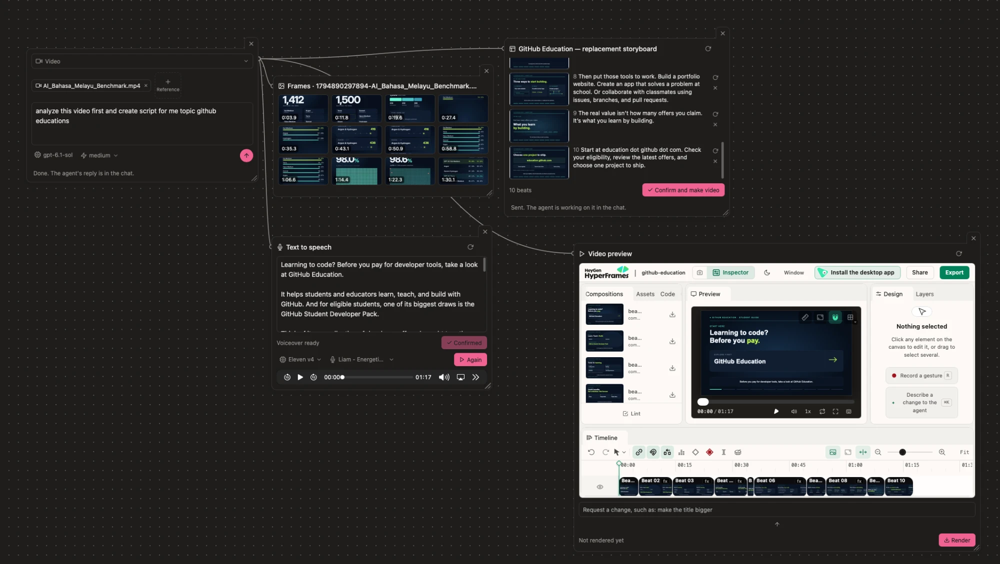
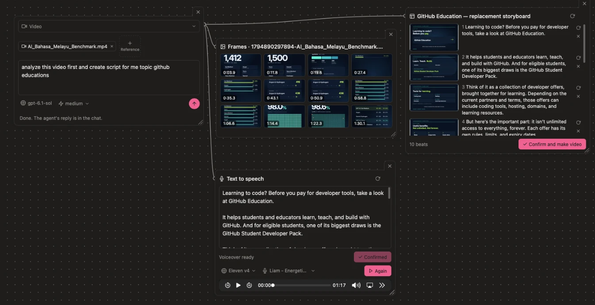

ElevenLabs Grants application
Desktop app for macOS, Windows and Linux, plus a terminal app. Its new canvas turns a reference video and a topic into a narrated, animated short, with the voice from ElevenLabs.
Open source (MIT)55 releases since Sep 2026Sign in with ElevenLabs
The problem
Someone studies a reference, picks one idea per scene and writes a script that fits the time.
The voiceover is recorded or generated, then every scene is timed to it by hand.
Diagrams, captions and motion are built in a separate editor, then exported and checked.
Developer tools, open-source projects and small teams need these videos most and have the least time to make them.
Hibiscus today
Native app for macOS, Windows and Linux with auto-updates, and a terminal app for macOS and Linux. Built in Rust with Tauri.
Bring your own provider (OpenRouter, OpenAI Codex sign-in, API keys) or use our Rooxcode gateway.
Edits files with checkpoints and undo, runs commands, drives a live browser, starts dev servers, and connects to WSL 2 on Windows.
MIT licensed and public on GitHub. 55 releases in under two months, each with checksums and signed build provenance.
New: the canvas
"Visuals only" changes scenes and keeps the voiceover. "Change the words" makes a new script and voiceover, then rebuilds.
A style skill fixes layout, motion, captions and voice, so every episode of a series looks and sounds the same.
Live product testing

From a real test run: the reference video's frames, the confirmed script with its ElevenLabs voiceover, a 10-beat storyboard, and the HyperFrames studio running inside the preview card (1:17, timed to the voiceover).
Live product testing

The same run one step earlier: the script card after Confirm shows "Voiceover ready" (Eleven v4, Liam voice, 1:17), and the storyboard draws one visual per line in the reference video's style.
How we use ElevenLabs
| Sign in with ElevenLabs | Users connect through your hosted MCP server with OAuth and PKCE, as Claude does. No API keys to copy. Hibiscus publishes its own client ID metadata document. |
| Text to speech | Every confirmed script becomes a voiceover. Eleven v4 or Multilingual v2, with the user's own voice library to choose from. |
| Timing | The voiceover sets how long each scene stays on screen. Reveals are planned to start on the spoken word. |
| Next | One clip per scene for word-synced animation, ElevenLabs music for background tracks, and image and video generation through the same sign-in. |
Traction
releases since the first public build on 24 September 2026
release downloads from GitHub, across macOS, Windows, Linux and the terminal app
macOS, Windows and Linux desktop builds from every release, with signed update files
The video canvas is in internal testing with our team now. The ElevenLabs sign-in, voiceover, storyboard and HyperFrames preview already work end to end.
Roadmap
Internal testing of the canvas: script, ElevenLabs voiceover, storyboard, HyperFrames preview and render, and follow-ups.
Public beta of the canvas in the desktop app. Per-scene voice clips, word-synced reveals, ElevenLabs music beds, sound effects.
Shared house styles for teams, image and video cards, and series tools for publishing one episode a week.
Team
Founder. Builds Hibiscus: the Rust engine, the desktop app for macOS, Windows and Linux, and the Rooxcode model gateway.
Co-founder and Operations Manager. Runs operations, partnerships and the business side of Rekabytes.
Builds and tests Hibiscus with Khairul.
Based in Kuala Lumpur, Malaysia. We ship in public: 55 releases since September 2026, all open source on GitHub.
The ask
Contact: Khairul Anuar Aliasak · hello@rekabytes.com · github.com/Rekabytes-Enterprise/hibiscus